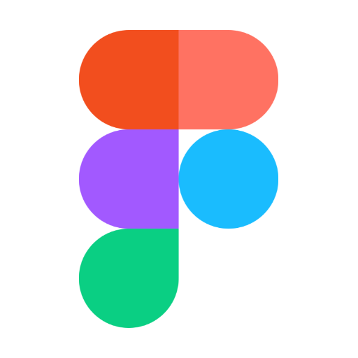

"Wanted" Poster for Armed Pillagers |
 |
29 APR 2020 • tags:
TL;DR: suggestion to implement wanted posters for pillager mob in villages (w/ pictures)
Minecraft's villager mob has gained a lot of features and usability in the game since its release in 2011. Villagers now come in a variety of attire based on their native biome and job/hobby in addition to other cool updates. Counter to their existence, the pillager mob was recently introduced to the game as an enemy. Pillagers look fairly similar to villagers except for their attire and grey-ish skin tone (see below).


left: (plain) villager, right: (unarmed) pillager
While pillagers are among some on the long list of hostile mobs to the player, they are also dangerous to villagers. Pillagers conduct raids, which are spontaneous village attacks often triggered by recent activity within or near the village by players swho possess the Bad Omen effect. Pillagers, like zombie villagers, are harmful to the villager and can kill.
Suggestion: Wanted Poster?
"Wanted!" created by Kelci Mensah
To give the villages a more detailed look, why not include wanted banners? Theoretically these signs could be posted on bulletins and the sides of villager homes. In the most recent version of Minecraft, 1.14.30, villages contain community bells that can be rung to warn all villagers and cause them to return to their homes. Aesthetically speaking, however, adding a wanted poster feature would be a cool idea. This idea has potential to expand to other mobs as well such as the zombie villagers and creepers.
← go back to articles page